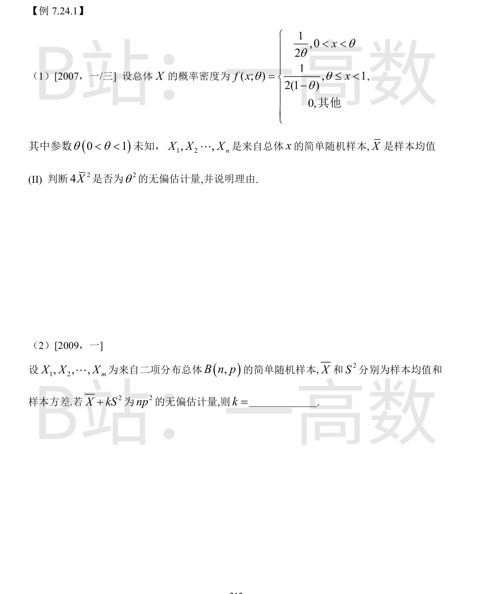
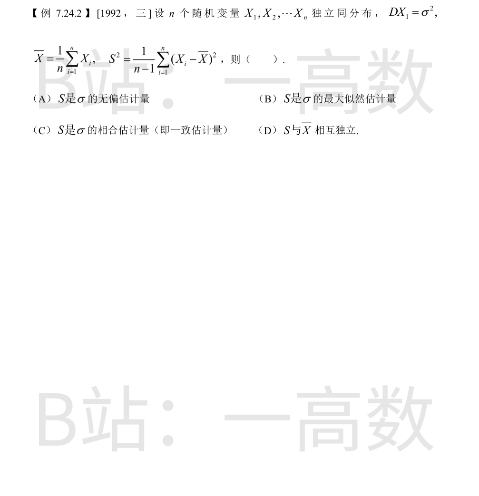

由 7.23.2(4) 已求 $E(X)=\frac{2\theta+1}{4}$。
$$E(X^2)=\int_0^{\theta}\frac{x^2}{2\theta}dx+\int_{\theta}^1\frac{x^2}{2(1-\theta)}dx=\frac{\theta^2}{6}+\frac{1-\theta^3}{6(1-\theta)}=\frac{\theta^2}{6}+\frac{1+\theta+\theta^2}{6}=\frac{1+\theta+2\theta^2}{6}$$
$$D(X)=E(X^2)-[E(X)]^2=\frac{1+\theta+2\theta^2}{6}-\frac{(2\theta+1)^2}{16}=\frac{8(1+\theta+2\theta^2)-3(1+4\theta+4\theta^2)}{48}=\frac{4\theta^2-4\theta+5}{48}$$
于是
$$E(4\bar{X}^2)=4\left[D(\bar{X})+(E\bar{X})^2\right]=4\left[\frac{D(X)}{n}+\left(\frac{2\theta+1}{4}\right)^2\right]=\frac{4\theta^2-4\theta+5}{12n}+\theta^2+\theta+\frac{1}{4}$$
由于 $\theta+\frac{1}{4}+\frac{4\theta^2-4\theta+5}{12n}>0$，故 $E(4\bar{X}^2)\ne\theta^2$，即 $4\bar{X}^2$ 不是 $\theta^2$ 的无偏估计量。
$E(X)=np$，$D(X)=np(1-p)$，且样本方差满足 $E(S^2)=D(X)=np(1-p)$。
$$E(\bar{X}+kS^2)=np+knp(1-p)=np\left[1+k(1-p)\right]\overset{\text{令}}{=}np^2$$
故 $1+k(1-p)=p$，即 $k(1-p)=-(1-p)$，得 $k=-1$。

$E(S^2)=\sigma^2$（样本方差无偏），且由大数定律 $S^2=\frac{1}{n-1}\sum(X_i-\bar{X})^2\xrightarrow{P}\sigma^2$；又 $g(x)=\sqrt{x}$ 是连续函数，由依概率收敛的连续性，$S=\sqrt{S^2}\xrightarrow{P}\sigma$，故 $S$ 是 $\sigma$ 的相合（一致）估计量，选 (C)。
(A) 错：$S^2$ 无偏一般不能推出 $S$ 无偏，通常 $E(S)\ne\sigma$。
(B) 错：对一般总体，S 不是 σ 的最大似然估计量。
(D) 错：只有正态总体时 S 与 X̄ 才相互独立，一般分布不成立。